Since our universe is quantum in nature, and the technologies of all of our extraterrestrial friends and benefactors bend time, space and reality, it should be well understood that our idea of what the universe is, is actually quite wrong. So here are some posts related to that. In these posts we talk about how reality has been bent or altered either by technology or thought control…
We begin with an Infographic…
Some stories and observations.
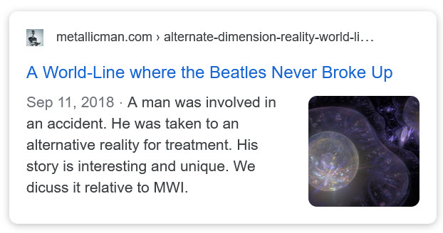
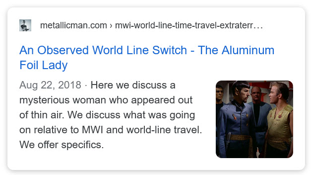
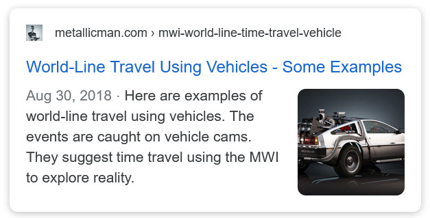
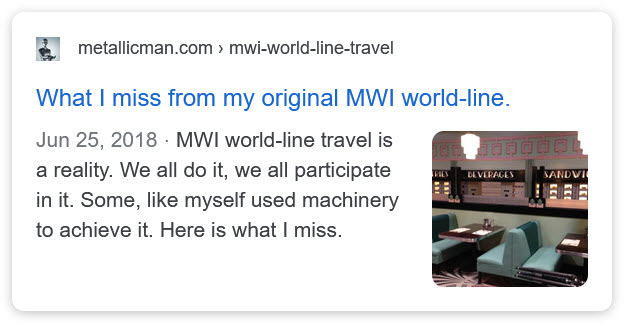
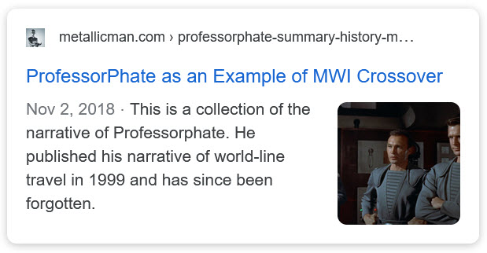
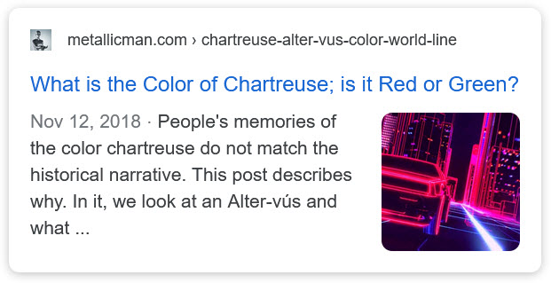
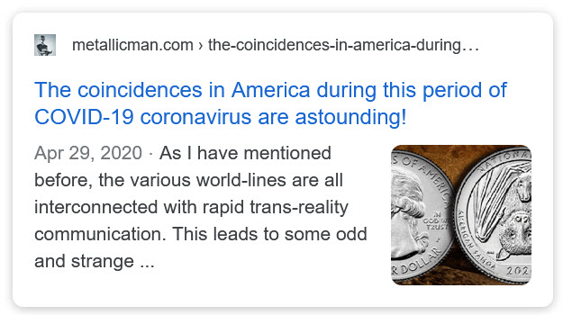
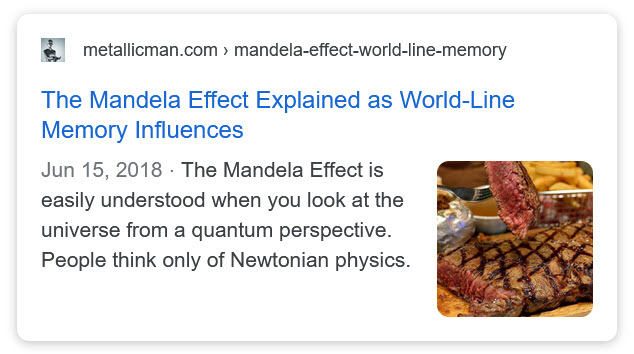
Second – How world-lines work.


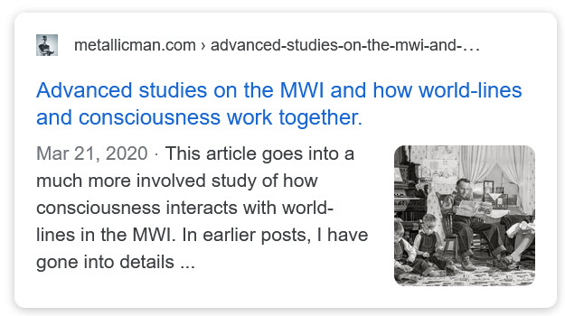
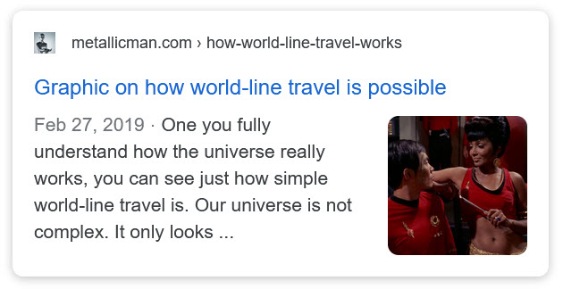
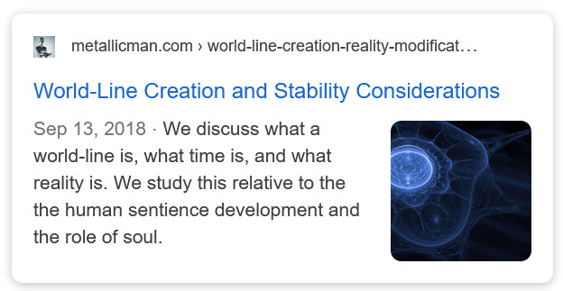